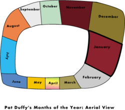
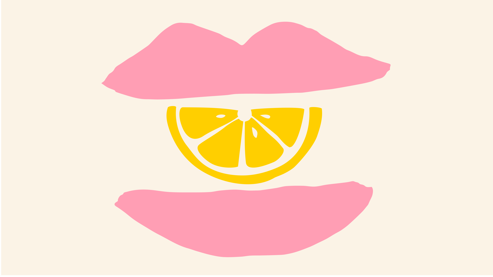
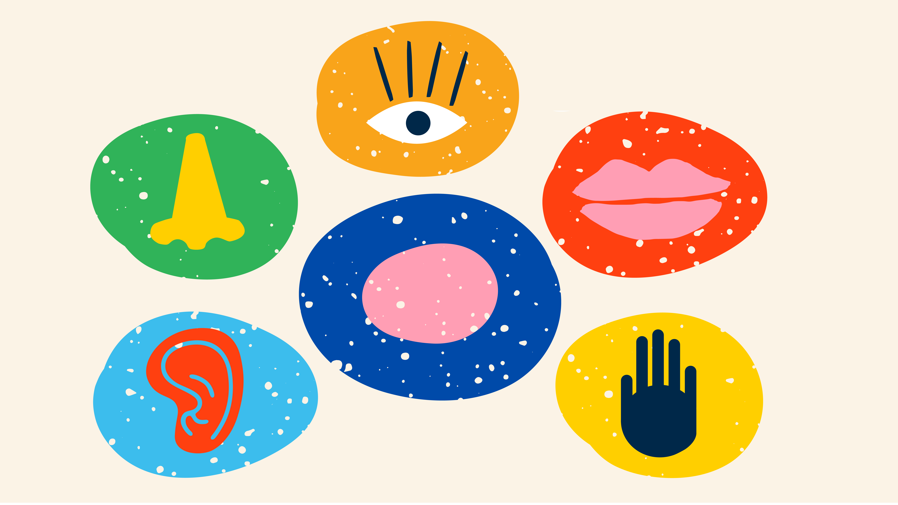
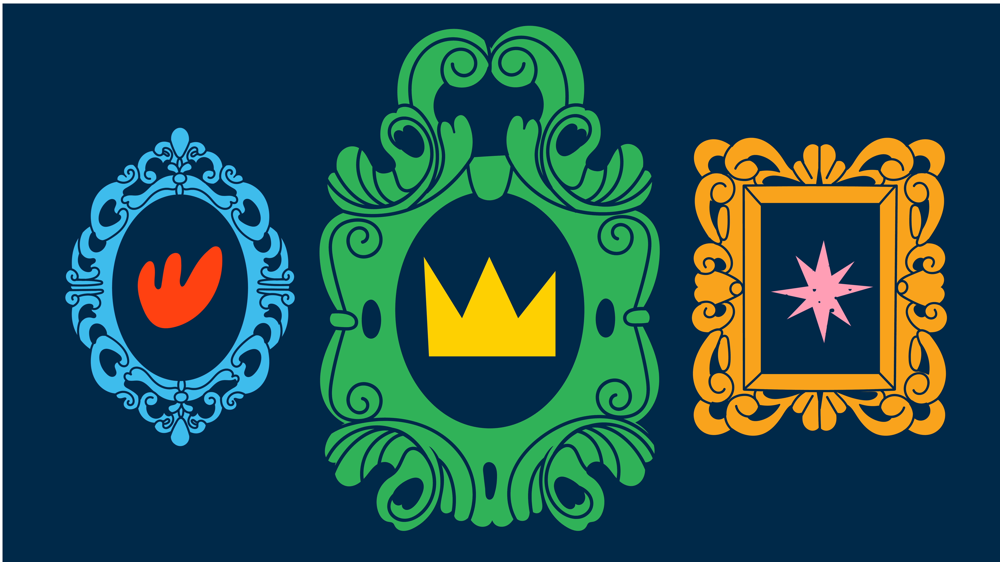

About Synaesthesia (FAQs)
Synaesthesia (American spelling synesthesia) is a rare condition that gives rise to a type of ‘merging of sensations’. For people with synaesthesia, one sense appears to merge, or cross with, another. Some synaesthetes see colours when they hear music (known as music-colour synaesthesia or sound-colour synaesthesia), for example. Other synaesthetes experience tastes in the mouth when they hear words (e.g., the word “house” might trigger the taste of toffee). And for other synaesthetes, letters, numbers or words feel coloured in some way (e.g., A might be red, Monday might be green). There are many different types of synaesthesia and other examples include seeing time mapped out in space (e.g., seeing the months of the year laid out in an oval shape), feeling touch in the hand when eating food, or hearing sounds when watching silent moving objects. There are likely to be well over 100 different types of synaesthesia depending on the sensations involved, so there is no one test to diagnose all conditions. But the most common synaesthesias trigger colours or shapes and are triggered by letters, digits, days and months.
Synaesthesia often seems fairly mundane to people who experience it, but very unusual to people who do not experience it. Here we answer some of the questions we are asked most frequently.
1. How common is synaesthesia?
2. How many different types of synaesthesia are there?
3. What is the most common type of synaesthesia?
4. Do different synaesthetes agree on what colour letters should be?
5. Is it possible for a synaesthete to have more than one type of synaesthesia?
6. Can synaesthesia occur for taste and smell?
7. Can synaesthesia occur for touch and other bodily sensations?
8. Are there any advantages or disadvantages to having synaesthesia? Is it linked to other conditions?
9. Are the brains of synaesthetes different?
11. Are women more likely to have synaesthesia than men?
12. Do identical twins have identical synaesthesia?
14. I see coloured auras around people. Is this synaesthesia?
15. What is the youngest age at which it has been reported in the literature?
16. Can synaesthesia ever be lost?
17. Can synaesthesia be acquired?
18. Is there a relationship between synaesthesia and artistic talent?
19. Are synaesthetes more likely to be left handed?
20. Which famous people have synaesthesia?
21. Is synaesthesia a ‘condition’?
1. How common is synaesthesia?
In order to find out how common synaesthesia is, we conducted an experiment on passers-by at London's Science Museum, and on the undergraduate population at the University of Edinburgh, Scotland (ref 1). In the science museum, we asked people whether they experienced colour when they saw, heard or thought about letters and numbers (which is known as grapheme-colour synaesthesia). We also devised a computer test in which black letters and numbers were flashed on the screen and people had to choose a colour as quickly as possible. Most people chose randomly but those with synaesthesia were very reliable in their choice of colours. This enabled us to estimate that this type of synaesthesia occurred in 1-2% percent of the population. A similar result was found in Edinburgh, and the Edinburgh study was also able to consider other types of synaesthesia too. Coloured days of the week was the most common type of synaesthesia, but we were also able to observe less common types such as tasting shapes, and coloured music. In total, we were able to identify 22 synaesthetes out of 500 students who were screened. This means 4.4% of the population appear to experience synaesthesia, but the figure will be higher if other types of synaesthesia (e.g. experiencing numbers or time in space) are also considered. ^
2. How many different types of synaesthesia are there?
It is traditionally believed that there are five senses: vision, hearing, touch, taste and smell. If one were to calculate the number of permutations (vision-hearing, vision-touch, hearing-touch, etc.) then one would get 20 potential types of synaesthesia. However, it is misleading to describe synaesthesia in terms of pairwise associations between these senses. The basic senses can be broken down into yet more dimensions. For instance, in the 'vision' domain some synaesthetes might experience colour, whereas others might experience shapes, and yet others might experience movement. Another difficulty with this formulation is that synaesthesia can be triggered by things which are not strictly sensory, such as numbers, letters, words, and names. Thus, the number of potentially different forms of synaesthesia is likely to be very big indeed. Researchers such as Dr. Sean Day, who has been collecting reports from different types of synaesthetes for over 25 years, have counted at least 80 different variants of synaesthesia (ref 2). ^
3. What is the most common type of synaesthesia?
Our recent research suggests that experiencing days and months in colour is probably the most common type of synaesthesia that involves one of the traditional five senses. Experiencing days, months, number and the alphabet in a spatial form (e.g. in lines, circles, spirals) is even more common (maybe 20 percent of the population). Most research on synaesthesia has concentrated on grapheme-colour synaesthesia. These synaesthetes typically experience colours whenever they see letters, hear letter names and even think about letters (e.g. A=red, B=blue, C=yellow). Words also tend to have colours that are derived from one or more of their constituent letters. Most synaesthetes have a 'feeling' of colour in their mind's eye but they don't actually see the ink or paper as being coloured (although some synaesthetes do). Synaesthetic colours generally co-exist with 'real' colours and they do not blend with or override each other. Colour is by far the most common experience of synaesthetes, although it can be triggered by a whole host of things and not just letters. ^
4. Is it possible for a synaesthete to have more than one type of synaesthesia?
Yes, around half of all synaesthetes have more than one type of synaesthesia, such as taste, sound and touch all producing colours. The fact that different types of synaesthesia co-occur in the same individuals suggests that there is a common cause for more than one type of synaesthesia, rather than every type of synaesthesia having its own independent cause. Synaesthetes experiencing multiple types of synaesthesia also show more pronounced differences in areas such as memory, mental imagery and attention to detail (ref 3). ^
5. Do different synaesthetes agree on what colour letters should be?
No and yes. If you put two synaesthetes together then they will typically argue over the colour of letters! However, if one looks at a larger sample of synaesthetes then some trends can be discerned. For instance, 'A' is often red, 'B' is often blue, 'C' is often yellow and so on. The image on the right shows the most common colours experienced by English speaking synaesthetes (figure from ref 4). This is likely to hold true for other types of synaesthesia, assuming we are able to make a large enough number of observations. For instance, certain musical instruments may tend to produce particular colours, shapes and movements even though there will also be a significant amount of individual variation. ^

6. Can synaesthesia occur for taste and smell?
Yes, and this is something that we are actively researching in our lab. For instance, we are in contact with a number of people in whom spoken words produce taste (refs 4,5,6). 'Taste' is not the best description for these cases, as the experiences have texture, location (e.g. edge of tongue, back of throat) and temperature as well as taste. The experiences can be highly specific (e.g. runny egg yolk). The other common type of synaesthesia involving taste is when taste produces colour sensations (e.g. ref8) or tactile shapes (ref 9) . As for smell, Harrison (ref 10) notes a case in which smell produces shapes and Raines (ref 11) notes a case of odours producing colours but this type of synaesthesia seems to be very rare. ^

7. Can synaesthesia occur for touch and other bodily sensations?
Yes, it was once thought synaesthesia involving touch was very rare but we now think it is one of the more common types of synaesthesia, affecting about 1.6% of the population (ref 12). Scientists have documented people who experience touch just by looking at someone else being touched, and we call this 'mirror touch' synaesthesia. Most people assumed it was 'normal', i.e. they assumed that everyone else experienced things this way too, and hence it was undetected until relatively recently (refs13,14). Feelings of pain or touch can sometimes trigger synaesthetic experiences of vision/colour (e.g. refs15,16). There is one known in case in which words trigger feelings of bodily movement (e.g. ref 17). ^
8. Are there any advantages or disadvantages to having synaesthesia? Is it linked to other conditions?
Synaesthesia has no known effects on IQ and synaesthetes do not stand out from other members of society in obvious ways - it is quite possible that you have acquaintances who are synaesthetic without even realising it. Most synaesthetes could not imagine life without their experiences and are either positively disposed towards it ("I feel so sorry for people who don't have this"), or neutral ("it is like being asked whether you enjoy having a left arm - it is just there, and I neither like it nor dislike it"). In fact, there is growing evidence that synaesthesia may be linked to certain advantages, including enhanced memory (ref 18), superior perception and being able to think more quickly. One of the most famous synaesthetes, Shereshevsky (ref 19) actually made a living out of being a memory expert! And, although synaesthetes’ memory abilities decrease like the rest of us with age, they maintain a memory advantage across the lifespan: an older synaesthetes has an equivalent memory to a younger non- synaesthetes (ref 20).
For some people, however, synaesthetic perceptions can be intrusive and disrupt their chain of thought if they have a particularly intense sensation, or can be problematic in other ways. You can read more about this from a schooling perspective here. Some recent studies have suggested that synaesthesia may be linked to other conditions but because the number of people with synaesthesia is relatively small, it is not yet possible to know this conclusively. For example, two small studies published in 2013 (refs 21,22) suggest that synaesthesia is more common in adults with autism (also known as autistic spectrum disorder). These results appear broadly reliable and have been confirmed elsewhere (refs 23,24) particularly in the type of adult who has both autism and savant syndrome (i.e., special talents; ref 26). However, it's important to note that most people with autism do not have synaesthesia, and that most people with synaesthesia do not have autism. Even in synaesthetes do not have autism, two traits associated with autism have been found to be elevated, and these traits are sensory sensitivity (unusual aversion or attraction to sensory stimuli) and attention to detail (refs 24,27,28). For further information on the link between see: Autism and synaesthesia.
Finally, three studies have shown adults and children with synaesthesia have higher rates of anxiety than otherwise expected (refs 23,24). Carmichael et al. (ref 23) tested 3,742 people (95 synaesthetes and 3,647 controls) found that the synaesthetes reported diagnoses of anxiety disorder significantly more often than controls. The same authors replicated their findings on second population of 120 synaesthetes and 166 non-synaesthetes. A third study produced a similar finding in children: 30% of children with grapheme-colour synaesthesia had symptoms suggestive of clinical Anxiety Disorder, which was two and a half times higher than non-synaesthetes. Recently, Ward (ref 29) evaluated studies that have found elevated levels of Post Traumatic Stress Disorder (PTSD) in individuals with synaesthesia. This author suggested that high levels of visual imagery and more intense autobiographical memories may predispose synaesthetes to the flashbacks experienced in PTSD.
.^
9. Are the brains of synaesthetes different?
Yes, studies have shown that the brains of synaesthetes are subtly different from the average person. For example, people with synaesthesia have more connections in some regions of the brain, and this seems to be part of their normal childhood development. (It's also possible for an adult to suddenly develop synaesthesia after a disease or injury, but this type of synaesthesia is extremely rare and very different from lifelong synaesthesias that start in childhood). Most theories of synaesthesia talk about re-wiring or extra-connections in the brain. White matter, which connects different regions together, in the brains of people with synaesthesia is organised differently (ref 30) and there is more grey matter in some regions of the brain relating to perception and attention. Another brain imaging study has shown that when certain synaesthetes hear spoken words then the parts of the brain normally dedicated to colour are used (ref 31). This suggests that parts of the brain that are normally used to process colour derived from vision are used instead to process colour derived from speech. ^

10. Does it run in families?
Yes. Around 40 percent of synaesthetes know of at least one other family member who has it (ref 32). The relative is not always immediate family. For example, you could have a synaesthetic cousin, but have non-synaesthetic brothers and sisters. It can also skip generations. For example, it could be that no living relative has it but that, say, your great-grandparents did have it. Synaesthetes often choose not to discuss their synaesthesia with their family in case they are dismissive of it. It is possible for a synaesthete to 'come out' late in life, only to find that their brother or sister or parent has been privately experiencing something very similar. The type of synaesthesia isn't strongly heritable. So someone with taste synaesthesia often has a family member with the more common, types of colour synaesthesia (ref 6). Studies investigating the genetics of synaesthesia are still in their infancy, but suggest that no single gene can be pinpointed. Instead it is thought that multiple genes with the same purpose, promoting enhanced connection between brain areas, may be responsible in different families of synaesthetes (ref 33). ^
11. Are women more likely to have synaesthesia than men?
No. It was once believed that synaesthesia was more common in women than men (ref 34) but other research has shown that this is not the case (ref 35). One possibly reason why earlier studies may have found more female synaesthetes is that men may be less likely to come forward and volunteer for research and less likely to admit to unusual experiences, like synaesthesia. ^
12. Do identical twins have identical synaesthesia?
No. Most twins seem to have different colours and different types of synaesthesia (but see ref 36, for an exception). It is even possible to have genetically identical male or female twins with only one twin having synaesthesia (refs 37,38). This does not disprove a genetic contribution to synaesthesia, but it does prove that genetic make-up isn't everything. This could also explain why synaesthesia can sometimes skip a generation or more. In these instances, it is probably just as likely that the non-synaesthetic twin will have synaesthetic children as the synaesthetic twin. ^
13. I always think of numbers/alphabet/calendar as having a particular spatial form. Is this synaesthesia?
Some people might think of numbers having a particular arrangement in space. For example, the numbers 1 to 10 being arranged on the lower left hand side of the person (near the hip); this turns right at number 11 and then makes a 30 degree turn at number 50, before stretching to infinity after the number 100. Similar things are reported for the alphabet, days and months, and other sequences (e.g. ref 39). Some researchers call this 'sequence-space synaesthesia' while other researchers might exclude this, preferring to think of synaesthesia as purely sensory (i.e., one sense crossing to another sense). Either way, these sequences in space go hand-in-hand with synaesthesia because they are more common in people with typical types of synaesthesia (e.g., coloured letters). Sequence space synaesthesia is surprisingly common, affecting approximately 8-13% of the population (ref 26). Other debated synaesthetic phenomena include assigning personality/genders to things such as letters (e.g. 'A' is a male letter with a shy disposition). Again many researchers refer to this as 'sequence-personality synaesthesia' and it is very common in those with other forms of synaesthesia (ref 40). These are therefore likely to be forms of synaesthesia in their own right, or arise by co-occurring brain mechanisms. ^

14. I see coloured auras around people. Is this synaesthesia?
Possibly. Although some people are attracted to more mystical explanations. The aura might be a form of synaesthesia triggered by the physical properties of the face, but more often than not the colour of the aura seems to relate to the person's mood or character traits (refs 41,42). There are now several cases in the literature of synaesthetes who experience colours for the names of people that they personally know well, for example (refs 43,44). ^
15. What is the youngest age at which it has been reported in the literature?
The youngest documented case in the literature was a three-and-a-half year old boy (ref 45) in whom noises produced colour (e.g. an electric fan sounded orange, and a frog bluish). There are a few studies that have examined how grapheme-colour synaesthesia develops over time. During literacy acquisition (6 to 10 years) children develop more and more stable colour associations for letters but they still don't yet reach adult levels (ref 46). It is not clear whether synaesthesia exists in a less stable form before this, or whether these children have other forms of synaesthesia that they lose as a result of becoming literate. ^
16. Can synaesthesia ever be lost?
We know of a number of people who claim that they used to experience synaesthesia but no longer do (normally dropping out before the age of 10). It has also been suggested that we were all born with synaesthesia but that it tends to get lost within the first few years of life (e.g. ref 47). Of course, it is impossible to ask infants what they are experiencing but there is good evidence that infants have a greater mixing of the senses than adults or older children. Synaesthesia in adulthood could also potentially be lost or diminished by chemical or organic changes in the brain. Sacks and Wasserman (ref 48) reports a case of a synaesthetic painter who suffered brain damage to the colour part of his brain. Not only did this result in an inability to experience 'real' colour (he now perceived the world in black and white), but also his synaesthetic colours vanished too. Another person reported that he lost his spatial numbers after a brain injury (ref 49). Recent research suggests some changes in the quality of the synaesthesia in older adults. In one study older adults were less likely to be classified as grapheme-colour synaesthetes, suggesting tat synaesthesia becomes weaker with age (ref 50). Additionally, older synaesthetes report less vibrant colours for their letters or numbers than younger synaesthetes, possibly as a result of natural age-related changes (refs 50,51).^
17. Can synaesthesia be acquired?
Yes, but the properties of acquired synaesthesia are somewhat different to those associated with the naturally occurring type. Hallucinogenic drugs such as LSD, magic mushrooms and mescaline can all produce transient forms of synaesthesia (e.g. ref 52). For instance, Albert Hoffmann was the first person to note the psychoactive properties of LSD when he accidentally ingested or breathed it. His lab notes (19th April 1943) clearly describe synaesthesia: "It was particularly striking how acoustic perceptions such as the noise of a passing auto, the noise of water gushing from the faucet or the spoken word, were transformed in to optical illusions." The synaesthesia disappears as the effect of the drug wears off. Although some people can experience 'flashbacks', we are not aware of anyone who claims to have permanently acquired synaesthesia as a result of drug use. Other people have acquired synaesthesia after becoming progressively blind (e.g. ref 53) or a brain injury (ref 54). It is unclear whether the synaesthesia in these cases is permanent or transient. ^
18. Is there a relationship between synaesthesia and artistic talent?
Synaesthetes are more likely to choose art as a hobby or occupation, although the effect is most pronounced for one type of synaesthesia: namely, visualising music. It is possible that the beauty of these experiences motivates them to create art (ref 55) rather than synaesthesia giving them 'talent' (which is a difficult thing to measure or judge). However, synaesthetes have been found to have traits and abilities that may improve creativity such as enhanced mental imagery (refs 55,57) . Across multiple studies synaesthetes have been found to have enhanced Openness to experience; a personality trait associated with aesthetic interests, active imagination and intellectual curiosity (refs 55, 58,59,60).^

19. Are synaesthetes more likely to be left handed?
No. Prof. Jamie Ward and his colleagues analysed a large sample of synaesthetes on a very detailed questionnaire (50 questions) about various aspects of handedness and laterality. People with synaesthesia are just as likely to be left handed as people who do not have synaesthesia (about 10% of the each group). Other researchers have reported the same finding (e.g. ref 61). ^
20. Which famous people have synaesthesia?
Some likely cases are Wassily Kandinsky (artist), Vladimir Nabokov (author of Lolita), Olivier Messiaen (composer), Ludwig Wittgenstein (philosopher), Pharrel Williams (pop star), Geoffrey Rush (actor), and Richard Feynman (Nobel prize-winning physicist). ^
21. Is synaesthesia a ‘condition’?
Scientists tend to describe ‘synaesthesia’ as a condition simply because they are looking for a word which does not imply illness or disease, but which nonetheless reflects the fact that most people do not have synaesthesia. Some people with synaesthesia dislike the term ‘condition’ because they believe this implies a need to ‘cure’ synaesthesia. But scientists who use the term do not wish to imply this at all – they’re simply looking for as neutral a term as possible! We as a scientific community would be happy to adopt another single-word noun that captures ‘difference’ without ‘disease’, if one were proposed. ^
NOTE: These FAQs were adapted from those at www.sussex.ac.uk/synaesthesia created by Prof. Jamie Ward and Prof. Julia Simner. They represent the views of the author of this website (Prof. Julia Simner) although we have cited the relevant evidence when appropriate.
References
1. Simner, et al. (2006). Synaesthesia: The prevalence of atypical cross-modal experiences. Perception, 35.
2. webpage: http://www.daysyn.com/index.html
3. Ward & Filiz (2020). Synaesthesia is linked to a distinctive and heritable cognitive profile. Cortex, 126.
4. Simner (2007). Beyond perception: synaesthesia as a psycholinguistic phenomenon. Trends in cognitive sciences, 1.
5. Ward & Simner (2003). Lexical-gustatory synaesthesia: linguistic and conceptual factors. Cognition, 89.
6. Ward et al. (2005). A comparison of lexical-gustatory and grapheme-colour synaesthesia. Cognitive neuropsychology, 22.
7. Simner & Ward (2006). The taste of words on the tip of the tongue. Nature, 444.
8. Downey (1911). A case of colored gustation. The American Journal of Psychology, 22.
9. Cytowic (1993). The experience of metaphor. The Man who Tasted Shapes: A Bizarre Medical Mystery Offers Revolutionary Insights into Emotions, Reasoning, and Consciousness.
10. Harrison (2001). Synaesthesia: The Strangest Thing. Oxford: Oxford University Press.
11. Raines (1909). Report of a case of psychochromesthesia. Journal of Abnormal Psychology, 4.
12. Banissy et al. (2009). Prevalence, characteristics and a neurocognitive model of mirror-touch synaesthesia. Experimental Brain Research, 198.
13. Blakemore et al (2005). Somatosensory activations during the observation of touch and a case of vision–touch synaesthesia. Brain, 128.
14. Banissy, & Ward (2007). Mirror-touch synesthesia is linked with empathy. Nature neuroscience, 10.
15. Whipple (1900) "Two Cases of Synaesthesia." American Journal of Psychology; 11.
16. Dudycha & Dudycha (1935). A case of synesthesia: visual pain and visual audition. The Journal of Abnormal and Social Psychology, 30.
17. Devereux (1966) An unusual audio-motor synesthesia in an adolescent. Psychiatric Quarterly, 40.
18. Ward et al. (2019). A meta-analysis of memory ability in synaesthesia. Memory, 27.
19. Luria (1968) The Mind of a Mnemonist. Translated from the Russian by Lynn Solotaroff.
20. Mealor, et al. (2020). Does synaesthesia protect against age‐related memory loss?. Journal of Neuropsychology, 14.
21. Neufeld et al (2013). Is synaesthesia more common in patients with Asperger syndrome? Frontiers in Human Neuroscience, 7.
22. Baron-Cohen, et al. (1987). Hearing words and seeing colours: An experimental investigation of a case of synaesthesia. Perception, 16.
23. Carmichael, et al. (2019). Is there a burden attached to synaesthesia? Health screening of synaesthetes in the general population. British Journal of Psychology, 110.
24. Simner, J., Smees, R., Rinaldi, L. J., & Carmichael, D. A. (2021). Wellbeing differences in children with synaesthesia: anxiety and mood regulation. Frontiers in Bioscience (Elite Edition), 13.
25. Ward et al. (2018). An autistic-like profile of attention and perception in synaesthesia. Cortex, 107.
26. Hughes et al. (2017). Is synaesthesia more prevalent in autism spectrum conditions? Only where there is prodigious talent. Multisensory Research, 30.
27. Ward, et al. (2017). Atypical sensory sensitivity as a shared feature between synaesthesia and autism. Scientific Reports, 7.
28. Van Leeuwen, et al. (2019). Autistic traits in synaesthesia: Atypical sensory sensitivity and enhanced perception of details. Philosophical Transactions of the Royal Society B, 374.
29. Ward (2021). Is synaesthesia a predisposing factor to post-traumatic stress disorder? Frontiers in Bioscience-Scholar, 13.
30. Rouw & Scholte (2007). Increased structural connectivity in grapheme-color synesthesia. Nature neuroscience, 10.
31. Nunn et al. (2002). Functional magnetic resonance imaging of synesthesia: activation of V4/V8 by spoken words. Nature neuroscience, 5.
32. Ward & Simner (2005). Is synaesthesia an X-linked dominant trait with lethality in males?. Perception, 34.
33. Tilot, et al. (2018). Rare variants in axonogenesis genes connect three families with sound–color synesthesia. Proceedings of the National Academy of Sciences, 115(12).
34. Baron-Cohen et al.(1996). Synaesthesia: Prevalence and familiality. Perception, 25.
35. Simner & Carmichael (2015). Is synaesthesia a dominantly female trait?. Cognitive Neuroscience, 6.
36. Hancock. (2006). Monozygotic twins' colour-number association: A case study. Cortex, 42.
37. Smilek, et al.. (2002). Synaesthesia: A case study of discordant monozygotic twins. Neurocase, 8.
38. Smilek, et al. (2005). Synaesthesia: discordant male monozygotic twins. Neurocase, 11.
39. Sagiv & Ward (2006). Crossmodal interactions: lessons from synesthesia. Progress in brain research, 155.
40. Simner & Holenstein (2007). Ordinal linguistic personification as a variant of synesthesia. Journal of Cognitive Neuroscience, 19.
41. Collins (1929). A case of synaesthesia. Journal of General Psychology, 2.
42. Riggs & Karwoski (1934). Synaesthesia. British Journal of Psychology, 25.
43. Ward (2004). Emotionally mediated Synaesthesia. Cognitive Neuropsychology, 21.
44. Weiss, et al (2001). Associating colours with people: A case of chromatic-lexical synaesthesia. Cortex, 37.
45. Whitchurch (1922). Synaesthesia in a Child of Three and a Half Years. American Journal of Psychology, 33..
46. Simner, et al. (2009). Early detection of markers for synaesthesia in childhood population. Brain, 132.
47. Maurer & Mondloch (2004). Attention on Synesthesia: Cognition, Development and Neuroscience.
48. Sacks & Wasserman (1987). The painter who became colour blind. New York Review of Books, 34.
49. Spalding & Zangwill (1950). Disturbance of number-form in a case of brain injury. Journal of Neurology, Neurosurgery, and Psychiatry, 13.
50. Simner, et al. (2017). Does synaesthesia age? Changes in the quality and consistency of synaesthetic associations. Neuropsychologia, 106.
51. Meier, et al.. (2014). Developmental aspects of synaesthesia across the adult lifespan. Frontiers in human neuroscience, 8.
52. Hartman & Hollister (1963). Effect of mescaline, lysergic acid diethylamide and psilocybin on color perception. Psychopharmacologia, 4.
53. Armel & Ramachandran (1999). Acquired synesthesia in retinitis pigmentosa. Neurocase, 5.
54. Schweizer, et al. (2013). From the thalamus with love: a rare window into the locus of emotional synesthesia. Neurology 81.
55. Ward, et al (2008). Synaesthesia, creativity and art: What is the link?. British Journal of Psychology, 99.
56. Rothen & Meier (2010). Higher prevalence of synaesthesia in art students. Perception, 39.
57. Chun & Hupé (2016). Are synesthetes exceptional beyond their synesthetic associations? A systematic comparison of creativity, personality, cognition, and mental imagery in synesthetes and controls. British Journal of Psychology, 107.
58. Banissy, et al. (2013). Personality traits in people with synaesthesia: Do synaesthetes have an atypical personality profile?. Personality and Individual Differences, 54.
59. Rinaldi et al. (2020). What is the personality profile of a child synaesthete. Frontiers in bioscience (Elite edition), 12.
60. Rouw, & Scholte (2016). Personality and cognitive profiles of a general synesthetic trait. Neuropsychologia, 88.
61. Rich, et al. (2005). A systematic, large-scale study of synaesthesia: implications for the role of early experience in lexical-colour associations. Cognition, 98.